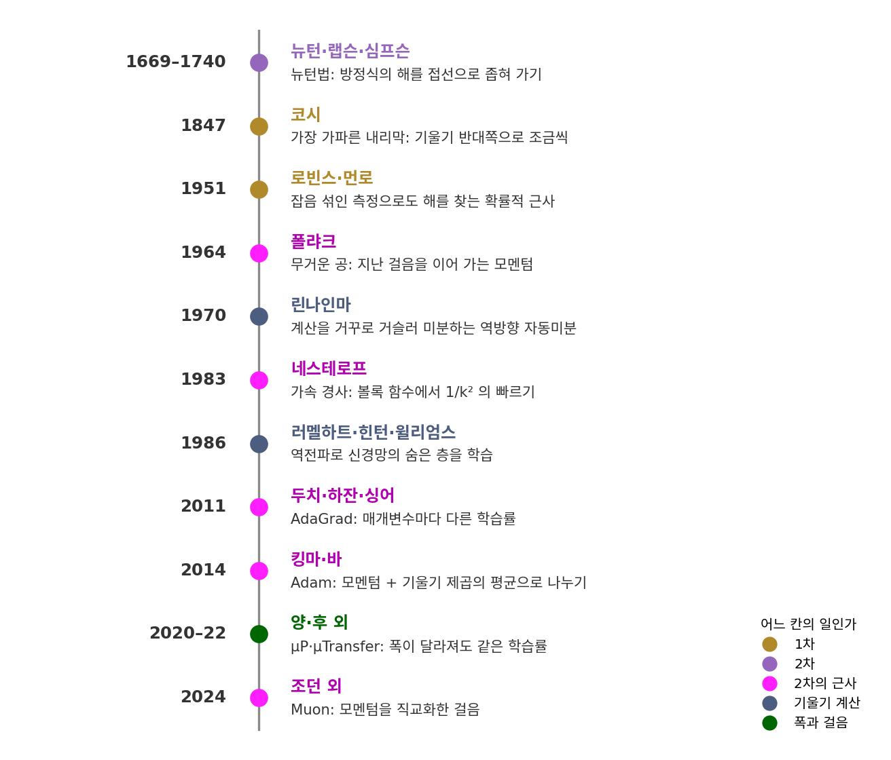
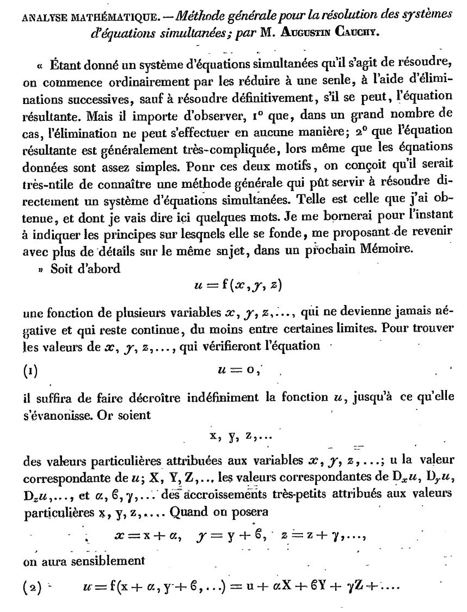
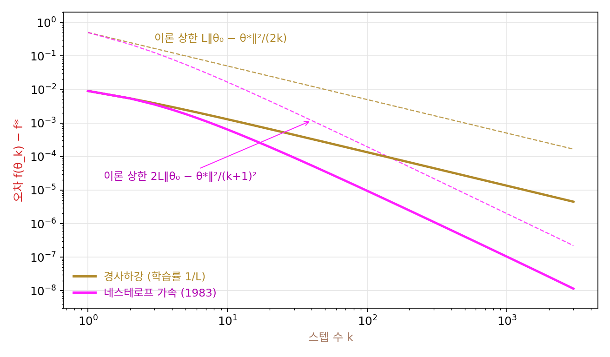
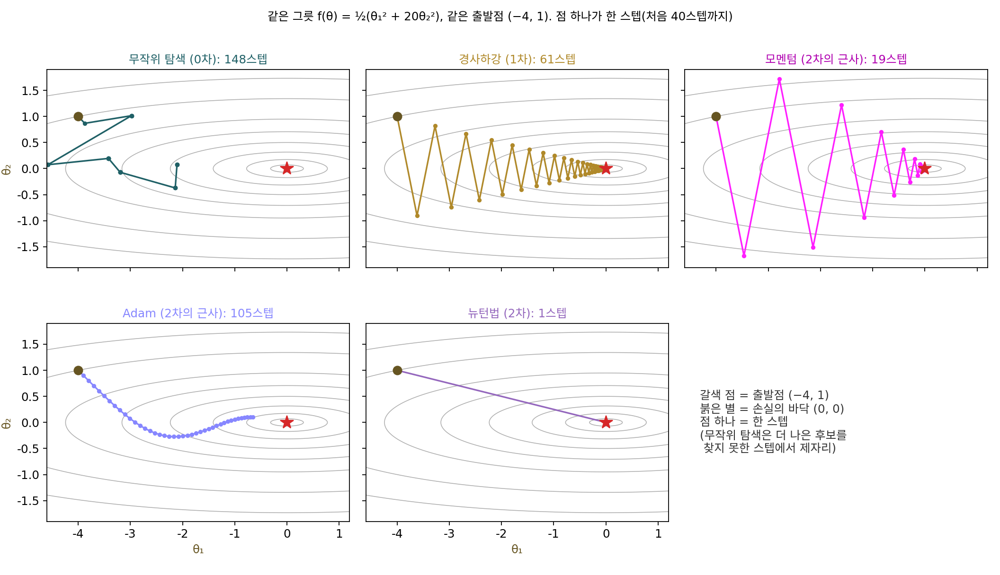

머리말: 경사하강에서 Muon 까지
기본값으로 쓰던 옵티마이저
신경망을 처음 학습시킬 때는 대개 예제 코드에 있던 optimizer = torch.optim.AdamW(model.parameters()) 한 줄을 그대로 옮겨 온다. 괄호 안에 아무것도 적지 않으면 지금의 파이토치(2.13)는 학습률 0.001, betas (0.9, 0.999), eps 0.00000001, weight_decay 0.01을 채워 넣는다. 학습이 잘 되면 이 숫자들을 다시 볼 일이 없지만, 학습이 무너지면 학습률을 열 배쯤 줄여 보고 그래도 안 될 때 다른 사람의 설정을 찾아 베끼게 된다.
그렇게 몇 번 하다 보면 betas 의 두 숫자는 무엇을 평균 내는 비율인지, eps 는 왜 그렇게 작은 수인지 같은 물음이 쌓인다. 같은 학습률이 작은 모델에서는 잘 되는데 폭을 네 배로 넓힌 모델에서는 왜 손실이 튈까? 요즘 큰 언어 모델의 학습 기록에 자주 나오는 Muon 은 Adam 과 무엇이 달라서 따로 이름을 얻었을까? 파이토치 2.13에는 torch.optim.Muon 도 들어 있고, 그 기본값에는 ns_steps 5, ns_coefficients (3.4445, −4.775, 2.0315)처럼 뜻을 짐작하기 어려운 숫자가 적혀 있다.
이 물음들은 저자가 ML 을 처음 공부하던 때부터 품어 온 것이기도 하다. 그 무렵의 초창기 ML 교재들은 경사하강의 식은 꼼꼼히 유도하면서도, 학습률을 얼마로 잡는지, 모멘텀 계수와 미니배치 크기는 무엇을 보고 고르는지, 학습률을 언제 얼마나 줄이는지 같은 최적화의 하이퍼파라미터는 값 하나를 적어 두거나 실험으로 고르라는 말로 넘어가는 일이 많았다. 그 빈자리에 대한 아쉬움이 이 책을 쓰게 된 동기 가운데 하나여서, 이 책은 하이퍼파라미터 하나하나가 어떤 물음에 대한 답으로 들어왔는지를 끝까지 따라간다.
기본값의 숫자들도 아무렇게나 정한 것이 아니라, 하나하나가 「앞의 방법으로는 무엇이 안 되었는가」에 대한 답으로 들어왔다. 그 답들이 모두 붙들고 있던 물음은 하나다. 지금 서 있는 자리에서 손실이 줄어드는 쪽으로 한 스텝을 내딛고 싶을 때, 어느 쪽으로 얼마나 멀리 가야 할까? 어느 쪽으로 얼마나 갈지 정하려고 손실에 대해 무엇을 알아내느냐에 따라 방법이 갈린다. 손실의 값만 재는 방법을 0차, 그래디언트(손실이 가장 빨리 커지는 방향과 그 방향의 변화율을 함께 담은 벡터)까지 쓰는 방법을 1차, 손실이 얼마나 휘었는지(곡률, 여기서는 2차 미분의 크기)까지 쓰는 방법을 2차 방법이라 부른다. 이 책은 이 세 방법과, 휨을 직접 계산하지 않고 흉내 내며 1차와 2차 사이에 서는 방법들(2차의 근사)을 차례로 따라간다.
역사: 코시에서 Muon 까지

이 이야기의 출발점은 1847년 코시가 연립방정식을 그래디언트 반대쪽으로 조금씩 줄여 풀자고 쓴 세 쪽짜리 글이고(경사하강 장), 그 글은 스텝을 얼마로 잡을지에 답하지 않은 채 끝났다.

백 년 뒤 문제는 측정 쪽에서 왔다. 허버트 로빈스(Herbert Robbins)와 서턴 먼로(Sutton Monro)는 1951년 『수리통계학 연보(Annals of Mathematical Statistics)』에 「확률적 근사 방법(A Stochastic Approximation Method)」을 실었다. 함수의 값을 노이즈 섞인 실험으로만 잴 수 있을 때도, 스텝 크기를 알맞게 줄여 가며 실험을 거듭하면 원하는 점에 확률적으로 다가간다는 것이다. 데이터를 조금씩 떼어 그래디언트를 추정하는 오늘날의 확률적 경사하강이 이 줄기에 선다.
1964년 모스크바의 보리스 폴랴크(Boris Polyak)는 되풀이 계산의 수렴을 빠르게 하는 방법들을 논문으로 냈는데, 그 가운데 하나가 바로 전 스텝의 움직임을 얼마간 이어 가는 방법이다. 경사하강이 길쭉한 골짜기에서 벽 사이를 오가며 느려질 때 특히 잘 듣는 이 방법은, 무거운 공(heavy ball)이 골짜기를 굴러 내려가는 모습에 빗대어져 지금 모멘텀이라는 이름으로 남았다. 1983년에는 유리 네스테로프(Yurii Nesterov)가 소련 과학 아카데미 회보(Doklady)에 실은 짧은 글에서, 매끄러운 볼록 함수라면 k스텝 뒤의 오차가 1/k²에 비례해 줄어드는 방법을 보였다(같은 조건에서 경사하강의 오차는 1/k에 비례해 줄어든다).

그 사이에 전혀 다른 쪽에서는, 그래디언트를 쓰려면 먼저 그래디언트를 구해야 한다는 물음이 풀리고 있었다. 1970년 핀란드 헬싱키 대학의 세포 린나인마(Seppo Linnainmaa)는 석사 논문에서 계산 과정을 거꾸로 거슬러 올라가며 미분을 모으는 방법을 적었다. 그의 관심은 신경망이 아니라 계산에 쌓이는 반올림 오차였다고 전해진다. 1986년 데이비드 러멜하트(David Rumelhart), 제프리 힌턴(Geoffrey Hinton), 로널드 윌리엄스(Ronald Williams)는 『네이처』에 「오차를 거꾸로 전파해 표현을 배우기(Learning representations by back-propagating errors)」를 실어, 같은 생각으로 신경망의 숨은 층까지 학습시킬 수 있음을 보였다. 역전파라는 이름은 여기서 널리 퍼졌다.
신경망이 커지자 파라미터마다 그래디언트의 크기가 크게 달라지는 문제가 앞에 섰다. 존 두치(John Duchi), 엘라드 하잔(Elad Hazan), 요람 싱어(Yoram Singer)는 2011년 AdaGrad 에서 파라미터마다 지금까지 받은 그래디언트의 크기로 학습률을 나눴다. 이듬해 힌턴은 코세라 온라인 강의에서 그 누적을 최근 그래디언트 제곱의 평균으로 바꾼 RMSProp 을 소개했다. 이 방법은 따로 논문으로 나오지 않은 것으로 알려져 있어서, 지금도 강의 슬라이드를 출처로 적는다. 디데릭 킹마(Diederik Kingma)와 지미 바(Jimmy Ba)는 2014년 12월 「Adam: 확률적 최적화 방법」을 아카이브(arXiv)에 올렸다. 모멘텀과 「그래디언트 제곱의 평균으로 나누기」를 한데 묶은 Adam 은 그 뒤 신경망 학습에서 가장 널리 쓰이는 기본 선택이 되었다. betas 의 두 숫자가 바로 이 두 평균의 비율이다.
남은 물음은 규모였다. 그레그 양(Greg Yang)과 에드워드 후(Edward Hu)는 2020년에 폭(한 층의 뉴런 수)이 끝없이 커질 때도 숨은 층의 특징이 멈추지 않고 배워지게 하는 초기화와 학습률의 규칙 μP(뮤피)를 냈고, 2022년 양·후 외 여러 사람은 그 규칙 아래에서는 작은 모델에서 찾은 학습률을 큰 모델에 그대로 옮겨 쓸 수 있음을 보였다(μTransfer). 그리고 2024년 10월 켈러 조던(Keller Jordan)은 작은 언어 모델을 누가 가장 빨리 학습시키나 겨루는 공개 기록에서 옵티마이저를 AdamW 에서 Muon 으로 바꿔 새 기록을 세웠고, 그해 12월 8일 블로그 글 「Muon: 신경망 은닉층을 위한 옵티마이저」로 방법을 정리했다. Muon 은 모멘텀으로 모은 스텝을 행렬 곱 몇 번으로 「직교화」해서 쓰는데, ns_steps 5가 바로 그 행렬 곱을 되풀이하는 횟수다.
연표의 맨 위에는 이 책에서 가장 오래된 방법이 있다. 2차 방법의 대표인 뉴턴법은 17세기 말 아이작 뉴턴(Isaac Newton)과 조지프 랩슨(Joseph Raphson)이 방정식의 해를 좁혀 가던 방법에서 이름을 얻었다. 미분을 써서 되풀이하는 지금의 꼴은 1740년 토머스 심프슨(Thomas Simpson)이 적었다는 견해가 있다. 가장 오래된 방법이 왜 신경망에서는 가장 드물게 쓰이는지를 따라가는 것이 이 책의 한 줄기다.

코시가 1847년에 벌써 그래디언트 반대쪽으로 가자고 했으면, 신경망 학습에 필요한 건 그때 다 나온 거 아니에요? 그래디언트는 미분해서 구하면 되고요.

파라미터가 둘이면 손으로 미분해도 되죠. 그런데 1986년 『네이처』 논문의 신경망처럼 숨은 층이 있고 가중치가 많으면, 민준 학생은 그래디언트를 무슨 수로 구하겠어요?
음, 식을 하나하나 미분하기는 힘들겠고… 가중치 하나를 살짝 바꿔 보고 손실이 얼마나 변하는지 재면 되지 않을까요?

그러면 가중치 하나마다 손실을 한 번씩 더 계산해야 하잖아. 가중치가 천 개면 한 스텝 가는 데 손실 계산이 천 번이야.

그래서 린나인마가 1970년에 적은, 계산을 거꾸로 거슬러 올라가며 미분을 모으는 방법이 큰 일이었어요. 손실을 앞으로 한 번 계산하고 거꾸로 한 번 거슬러 가면 그래디언트 전체가 나오니까요. 그런데 린나인마가 본 것은 반올림 오차였다고 전해지고, 같은 생각이 신경망의 숨은 층을 학습시키는 데 널리 쓰인 것은 16년 뒤예요.

도구는 1970년에 있었는데, 그걸 신경망에 써 볼 생각이 이어지기까지 16년이 걸린 거네요. 지금은 loss.backward() 한 줄인데요.

그래디언트를 얻는 값이 그렇게 다르다면, 답을 미리 아는 작은 문제 하나에서도 손실의 값만 재는 방법과 그래디언트를 쓰는 방법은 답에 닿기까지 손실을 몇 번씩 계산해야 할까요?
한 그릇, 다섯 방법
방법마다 무엇이 다른지는 말보다 표 하나와 그림 한 장으로 보는 편이 빠르니, 답을 미리 아는 가장 작은 문제를 하나 세우자. 파라미터 θ(세타)의 성분이 둘인 손실 f(θ) = ½(θ₁² + 20θ₂²)는 바닥이 원점에 있는 그릇인데, θ₂ 쪽 벽이 θ₁ 쪽 벽보다 20배 가파르다. 위에서 내려다보면 동서로 길쭉한 골짜기다. 신경망의 손실도 바닥 근처에서는 이런 그릇처럼 생겼고, 방향마다 곡률이 이보다 훨씬 크게 다른 경우가 흔하다. 가장 가파른 방향과 가장 완만한 방향의 곡률 비를 조건수(골짜기가 얼마나 길쭉한가)라 하는데, 이 그릇의 조건수는 20이다.
출발점 (−4, 1)에서 다섯 방법이 바닥에 닿기까지 걸린 스텝 수와 첫 스텝 뒤의 손실은 아래 표와 같고, 처음 40스텝 동안 걸은 길은 표 바로 아래 그림에 있다.
| 방법 | 손실에 대해 쓰는 것 | 도착까지 스텝 | 첫 스텝 뒤 손실 (처음 18) |
|---|---|---|---|
| 무작위 탐색 (0차) | 손실의 값만 | 148 (손실 계산 148번) | 15.04 |
| 경사하강 (1차) | 그래디언트 | 61 | 14.73 |
| 모멘텀 (2차의 근사) | 그래디언트 + 지난 스텝 | 19 | 33.95 |
| Adam (2차의 근사) | 그래디언트 + 그래디언트 제곱의 평균 | 105 | 15.71 |
| 뉴턴법 (2차) | 그래디언트 + 휨 전체 | 1 | 0 |

「도착」은 바닥까지의 거리가 처음으로 0.01 아래로 들어온 스텝으로 정했다. 무작위 탐색은 지금 자리 둘레에서 후보 한 점을 뽑아 손실이 줄 때만 옮기는 방법((1+1)-진화 전략)이고, 경사하강은 이 그릇에서 가장 빨리 내려가는 고정 학습률(0.0952)을, 모멘텀은 폴랴크가 2차 함수에 맞춰 고른 값을, Adam 은 학습률 0.1과 betas 기본값을 썼다.
그림과 표에서 이 책의 물음들이 하나씩 보인다.
경사하강은 가파른 θ₂ 방향에서 벽과 벽 사이를 오가느라 학습률을 더 키울 수 없고, 그 학습률로는 완만한 θ₁ 방향을 따라 천천히 기어간다. 학습률을 흔히 권하는 안전한 값(가장 가파른 곡률의 역수, 0.05)으로 줄이면 117스텝이 걸린다. 스텝 수를 정하는 것이 골짜기의 길쭉함이라는 것이 보인다.
모멘텀은 첫 스텝에서 오히려 손실을 18에서 33.95로 키우는데도 19스텝 만에 닿는다. 지난 스텝을 이어 가면 오가는 성분은 서로 지우고 한쪽으로 꾸준히 가는 성분은 쌓이기 때문에, 그래디언트만 쓰면서도 마치 골짜기의 모양을 아는 것처럼 걷는다.
Adam 은 첫 스텝에 두 좌표를 똑같이 0.1씩 옮겼다(−4, 1에서 −3.9, 0.9로). 그래디언트를 그 크기로 나눠서, 축마다 휨을 따로 추정한 것처럼 가파른 방향과 완만한 방향의 스텝 크기를 똑같이 맞춘 것이다. 그 대가로 스텝 크기가 학습률에 묶여, θ₁ 방향으로 4만큼 떨어진 바닥까지 가는 데 105스텝이 걸렸다. Adam 이 한 스텝에 좌표마다 움직이는 거리는 학습률(여기서는 0.1) 안팎으로 묶이므로, 4만큼 떨어진 바닥까지는 곧장 가도 40스텝이 넘게 든다. 학습률을 0.1 하나로만 돌린 이 그림에서는 학습률이 스텝 크기의 상한을 정해서 Adam 이 느렸고, 휨이 축마다 크게 다른 곳에서 스텝 크기를 맞춰 주는 장점은 조건수 20인 이 2차 그릇에서 잘 드러나지 않는다. 더 눈여겨볼 것은 같은 그릇을 45° 돌렸을 때로, 경사하강·모멘텀·뉴턴법의 스텝 수는 61, 21, 1로 거의 그대로인데 Adam 은 470스텝으로 늘어난다. 그릇이 돌아가면 가파른 방향이 좌표축과 어긋나서, 「축마다 따로」 하는 추정이 맞지 않게 된다.
뉴턴법은 2차 함수의 휨을 전부 알기 때문에 바닥이 어디 있는지 식으로 풀어 한 스텝에 닿는다. 그러나 휨 전체를 담은 표(헤시안)는 파라미터가 n개면 n × n 칸이어서, 파라미터가 1억 개인 신경망이면 칸이 1경 개나 된다. 그래서 가장 빠른 방법을 신경망에서는 쓰지 못한다.
무작위 탐색은 그래디언트 없이도 바닥에 닿았지만, 손실을 148번 재야 했다. 파라미터가 둘일 때 이만큼이고, 수가 늘면 맞는 방향을 우연히 고를 확률이 빠르게 줄어든다.
테일러 사다리: 이 책의 지도
방법마다 손실에 대해 무엇을 쓰는지는, 지금 자리 θ에서 조금 옮긴 자리의 손실을 테일러 전개로 근사한 식 하나로 정리된다.
테일러 전개의 항을 하나씩 더할 때마다 사다리를 한 칸씩 오른다고 보면, 0차 방법은 첫 항인 손실의 값만 재고, 1차 방법은 둘째 항까지 써서 그래디언트 반대쪽으로 가고, 2차 방법은 셋째 항까지 써서 휜 그릇의 바닥을 식으로 풀어 그리로 간다. 사다리를 오를수록 한 스텝은 똑똑해지지만 그만큼 값이 비싸진다. 파라미터가 n개면 첫 항은 숫자 하나이지만 둘째 항의 그래디언트는 숫자 n개, 셋째 항의 헤시안은 숫자 n²개다.
큰 신경망의 옵티마이저는 대부분 1차와 2차 사이에 서서, 그래디언트는 계산하되 헤시안은 계산하지 않고 헤시안이 하는 일을 흉내 낸다. 모멘텀은 지난 스텝들의 평균으로 골짜기의 모양을 몸으로 익히고, Adam 은 그래디언트 제곱의 평균으로 축마다의 휨을 추정하고, K-FAC 과 Shampoo 는 층마다 헤시안을 작은 두 행렬로 쪼개 근사하고, Muon 은 스텝의 크기를 재는 규칙(노름)을 행렬에 맞게 바꿔 방향마다 고른 스텝을 낸다. 이 책은 이 방법들을 「2차의 근사」라고 부른다.
그렇다면 역전파는 이 사다리의 어디에 설까? 역전파는 어디로 갈지 정하는 규칙이 아니라 둘째 칸에 필요한 그래디언트를 구하는 계산법이어서, 사다리의 칸에 들지 않는다. 그래디언트를 손실의 값만으로 구하려면 파라미터를 하나씩 조금 바꿔 손실을 다시 재야 하니, 파라미터가 n개면 손실을 n + 1번 계산해야 한다. 역전파는 손실을 한 번 계산한 길을 거꾸로 한 번 거슬러 올라가 n개의 편미분을 한꺼번에 얻고, 그 비용은 n과 상관없이 손실 계산 한 번의 몇 배 정도다. 1차 방법과 그 위의 모든 방법이 신경망에서 쓸 만해진 것은 이 계산법 덕분이니, 역전파는 사다리를 오르는 발판이라고 보면 된다.
flowchart LR z["0차<br/>손실의 값만<br/>무작위 탐색, 진화 알고리즘"] --> o["1차<br/>그래디언트<br/>경사하강, 확률적 경사하강"] o --> a["2차의 근사<br/>휨을 흉내 내기<br/>모멘텀, Adam, K-FAC, Shampoo, Muon"] a --> s["2차<br/>휨 전체<br/>뉴턴법"] b["역전파<br/>그래디언트를 구하는 계산법"] -. 발판 .-> o b -. 발판 .-> a m["μP<br/>폭이 달라질 때 스텝의 크기"] -. 규칙 .-> a
ML에서: 기본값 다시 보기
이 책을 다 읽고 나면 torch.optim.AdamW(model.parameters()) 한 줄이 다르게 보인다. 학습률 0.001은 「손실이 줄어든다고 장담할 수 있는 상한」 아래의 어디쯤을 고른 값이고, 그 상한은 손실이 가장 가파르게 휜 방향이 정한다(「경사하강」). betas 의 0.9는 모멘텀이 지난 스텝을 얼마나 이어 가느냐, 0.999는 축마다의 휨을 추정하는 그래디언트 제곱의 평균을 얼마나 길게 기억하느냐다. 0.00000001이라는 eps 는 그래디언트가 거의 0인 축에서 나눗셈이 터지지 않게 분모에 더한 작은 수이고, weight_decay 0.01은 파라미터를 스텝마다 조금씩 0 쪽으로 당기는 세기다(「적응 학습률」). 폭을 넓힌 모델에서 같은 학습률이 왜 듣지 않는지와 그 처방은 「μP」에서, Muon 의 ns_steps 5와 세 계수가 무엇을 하는지는 「Muon」에서 직접 계산한다.
그렇다고 기본값을 바꾸지 말라는 말은 아니다. 기본값이 무엇을 가정하고 정해졌는지 알면, 학습이 무너졌을 때 어느 숫자를 왜 바꿀지를 짐작이 아닌 근거로 먼저 떠올릴 수 있다.
이 책의 짜임
이 책의 뼈대는 테일러 사다리를 아래에서 위로 오르는 순서이고, 맨 먼저 사다리를 세우는 데 쓰는 도구를 갖춘다. 손실을 지형으로 보는 눈, 그래디언트와 자코비안, 테일러 전개 자체, 그리고 「얼마나 빨리 변할 수 있나」를 숫자 하나로 묶는 립시츠 연속과, 극소가 곧 최소가 되는 좋은 경우인 볼록성이다(미분과 근사). 그다음 값만 쓰는 방법(0차 최적화), 그래디언트를 쓰는 방법과 그 그래디언트를 얻는 역전파·초기화(1차 최적화), 휨을 쓰는 방법(2차 최적화), 휨을 흉내 내는 방법과 큰 모델의 스텝(2차의 근사와 큰 모델의 스텝)으로 오른다. 그 뒤 두 부는 사다리를 다른 곳에 써 본다. 점 하나가 아니라 분포를 옮기는 최적화(분포를 옮기는 최적화)와, 옵티마이저가 손실이 0에 가까운 여러 자리 가운데 어느 것을 고르느냐가 처음 보는 데이터에서의 성능을 정한다는 이야기(최적화가 일반화를 만든다)다.
flowchart TB
subgraph P1["미분과 근사"]
direction LR
a1["손실 지형"] --> a2["그래디언트와 자코비안"] --> a3["테일러 전개"] --> a4["립시츠 연속"] --> a5["볼록"]
end
subgraph P2["0차 최적화"]
direction LR
b1["0차 최적화"] --> b2["진화 알고리즘"]
end
subgraph P3["1차 최적화"]
direction LR
c1["역전파"] --> c2["가중치 초기화"] --> c3["경사하강"] --> c4["확률적 경사하강"]
end
subgraph P4["2차 최적화"]
direction LR
d1["뉴턴법"] --> d2["샤프니스"]
end
subgraph P5["2차의 근사와 큰 모델의 스텝"]
direction LR
e1["모멘텀"] --> e2["적응 학습률"] --> e3["곡률 근사"] --> e4["Muon"] --> e5["μP"]
end
subgraph P6["분포를 옮기는 최적화"]
direction LR
f1["최적 수송"] --> f2["WGAN"]
end
subgraph P7["최적화가 일반화를 만든다"]
direction LR
g1["암묵적 편향"] --> g2["이중 하강"]
end
P1 --> P2 --> P3 --> P4 --> P5 --> P6 --> P7 --> z["맺음: 남은 물음"]
장마다 무엇에 막혀서 무엇을 묻는지를 한 줄씩 적으면 이렇다.
| 장 | 부 | 앞에서 막혀서 묻는 것 |
|---|---|---|
| 「손실 지형: 공을 굴려 손실의 바닥을 찾는 첫 실험」 | 미분과 근사 | 학습이란 손실이라는 지형에서 낮은 곳을 찾는 일이다. 눈을 가리고 발밑만 느낄 수 있을 때 손실의 바닥은 어떻게 찾을까 |
| 「그래디언트와 자코비안: 미분 가능성에서 연쇄법칙까지」 | 미분과 근사 | 발밑의 기울어짐을 숫자로 적으려면 무엇이 필요할까. 파라미터가 여럿이고 층이 겹치면 미분은 어떻게 이어 붙일까 |
| 「테일러 전개: 0·1·2차 근사의 사다리」 | 미분과 근사 | 지금 자리의 정보만으로 옆자리의 손실을 얼마나 잘 맞힐 수 있을까. 항을 하나 더할 때 무엇을 얻고 무엇을 치를까 |
| 「립시츠 연속: 함수가 얼마나 빨리 변할 수 있나」 | 미분과 근사 | 근사가 맞는 범위는 어디까지일까. 층을 쌓으면 그 범위는 어떻게 바뀌고, 되풀이는 언제 한 점으로 모일까 |
| 「볼록이면 왜 쉬운가: 극소가 곧 최소」 | 미분과 근사 | 어떤 손실이면 손실의 바닥에 닿았다고 장담할 수 있고, 몇 스텝이면 닿을까 |
| 「미분 없이: 0차 최적화」 | 0차 최적화 | 그래디언트를 구할 수 없는 손실은 어떻게 줄일까. 값만 재서 방향을 추정하면 얼마나 비쌀까. 신경망 안의 뽑기에서 끊긴 미분은 어떻게 이을까 |
| 「진화 알고리즘: 개체군으로 하는 탐색」 | 0차 최적화 | 점 하나 대신 후보 여러 개를 함께 굴리면 무엇이 나아질까 |
| 「역전파: 자코비안 곱을 거꾸로」 | 1차 최적화 | 파라미터가 수억 개일 때 그래디언트를 한꺼번에 값싸게 구하려면 |
| 「가중치 초기화: 신호가 커지지도 사라지지도 않게」 | 1차 최적화 | 층을 수십 겹 쌓으면 신호와 그래디언트가 왜 터지거나 사라질까. 출발점을 어떻게 잡아야 할까 |
| 「경사하강: 학습률은 어디까지 키울 수 있나」 | 1차 최적화 | 그래디언트 반대쪽으로 얼마나 멀리 가도 될까. 왜 어떤 방향은 한참 걸릴까 |
| 「확률적 경사하강: 노이즈 섞인 그래디언트로 걷기」 | 1차 최적화 | 데이터 전체의 그래디언트 대신 일부로 추정한 그래디언트를 써도 될까. 학습률은 언제 줄여야 할까 |
| 「뉴턴법과 헤시안: 곡률을 알면 한 번에」 | 2차 최적화 | 휨까지 알면 한 스텝에 닿는다. 그런데 왜 신경망에서는 거의 쓰지 않을까. 안장점에서는 무슨 일이 생길까 |
| 「샤프니스: 안정성의 가장자리」 | 2차 최적화 | 학습률 상한을 넘은 신경망이 왜 무너지지 않고 학습할까 |
| 「모멘텀: 무거운 공과 네스테로프 가속」 | 2차의 근사와 큰 모델의 스텝 | 휨을 계산하지 않고 길쭉한 골짜기를 빨리 내려갈 수는 없을까 |
| 「적응 학습률: AdaGrad 에서 AdamW 까지」 | 2차의 근사와 큰 모델의 스텝 | 파라미터마다 학습률을 따로 줄 수는 없을까. 그래디언트의 크기로 학습률을 나누는 근사는 언제 맞고 언제 틀릴까 |
| 「곡률 근사: 준뉴턴에서 K-FAC·Shampoo 까지」 | 2차의 근사와 큰 모델의 스텝 | 축마다 따로가 아니라 방향 사이의 얽힘까지 값싸게 근사하려면 |
| 「Muon: 노름을 바꾸면 가장 가파른 방향이 바뀐다」 | 2차의 근사와 큰 모델의 스텝 | 「가장 가파른 방향」은 스텝의 크기를 무엇으로 재느냐에 따라 달라진다. 행렬의 스텝 크기는 무엇으로 재야 할까 |
| 「μP: 폭이 달라져도 같은 학습률로」 | 2차의 근사와 큰 모델의 스텝 | 작은 모델에서 고른 학습률을 큰 모델에 그대로 쓸 수 있을까. 계산이 정해지면 무엇을 얼마나 키울까 |
| 「최적 수송: 흙을 가장 적게 나르는 짝짓기」 | 분포를 옮기는 최적화 | 점 하나가 아니라 흙더미 전체를 옮기는 가장 싼 계획은 어떻게 찾을까 |
| 「WGAN: 최소최대와 1-립시츠 판별기」 | 분포를 옮기는 최적화 | 두 신경망이 서로 반대 방향으로 내려가면 왜 맴돌까. 수송 비용을 판별기로 재려면 무엇이 필요할까 |
| 「암묵적 편향: 옵티마이저가 고르는 해」 | 최적화가 일반화를 만든다 | 손실을 0으로 만드는 해가 수없이 많을 때 옵티마이저는 어느 것을 고를까 |
| 「이중 하강: 외우고 나서도 나아진다」 | 최적화가 일반화를 만든다 | 파라미터를 데이터보다 많이 쓰면 오버피팅해야 할 텐데, 왜 시험 오차가 다시 내려갈까 |
| 「맺음: 남은 물음」 | 맺음 | 비볼록한 손실에서 왜 이렇게 잘 통하는지, 큰 모델의 학습은 왜 가끔 무너지는지 |
장마다 그 전까지의 방법이 막힌 곳에서 출발하므로 처음부터 차례로 읽기를 권한다. 이를테면 「모멘텀」과 「적응 학습률」은 「경사하강」에서 스텝 수가 골짜기의 길쭉함에 묶인다는 것을 본 뒤라야 무엇을 고친 것인지 보이고, 「Muon」은 「곡률 근사」의 Shampoo 에서 누적을 끈 자리에서 출발한다. 이미 옵티마이저를 잘 아는 독자라면 테일러 사다리를 세우는 「테일러 전개」를 읽은 뒤 관심 있는 부로 건너뛰어도 된다.
다른 권으로 가는 길잡이
최적화는 다른 권 어디에나 지나간다. 디퓨전 모델도, 강화학습의 정책도 결국 어떤 손실을 경사하강의 후손으로 줄여서 얻기 때문이다. 그래서 이 책에서 다른 권의 이론이 필요한 자리에는 두세 문장의 소개와 함께 그 책의 절로 잇는 길잡이 상자를 두었는데, 길잡이는 건너뛰어도 이 책을 따라오는 데 지장이 없다. 이 책의 큰 줄기에서 다른 권으로 이어지는 대표적인 길은 다음 다섯 가지다.
누구를 위한 책인가, 어떻게 읽나
고교 미분과 행렬 곱셈을 알고, 신경망을 파이토치로 한 번쯤 학습시켜 봤지만 옵티마이저는 기본값으로 써 온 사람을 독자로 생각했다. 편미분, 고윳값, 테일러 전개는 쓰는 자리에서 처음부터 다시 세우고, 역전파도 안다고 치지 않는다. 이 책에서 역전파는 테일러 사다리의 어디에 서는지를 보여 주는 지도의 한 칸으로 다룬다.
본문·표·그림·문제에 나오는 숫자는 모두 직접 돌린 코드에서 나온 값이고, 그 코드는 장마다 sources/<장 이름>/ 에 있다. 사람 이름·연도·논문 제목은 원 논문이나 믿을 만한 자료로 확인했다. 옵티마이저의 역사에는 출처가 흐린 이야기가 많아서, 확인하지 못한 것은 「전해진다」라고 적거나 쓰지 않았다.
다루지 않는 것. 선형계획법과 정수계획법 같은 고전 수리계획은 최적 수송에 필요한 만큼만 다룬다. 자연 그래디언트가 왜 피셔 정보를 자로 쓰는지의 이론은 정보기하학 책에, 「일반화란 무엇인가」라는 물음 자체는 시리즈의 다른 책에 맡기고, 이 책은 「손실을 똑같이 낮추는 여러 해 가운데 옵티마이저가 어느 것을 고르나」까지만 간다.
수식 색과 기호 표. 수식의 기호는 개념마다 정해 둔 색으로 칠했고, 수식 바로 아래에 기호마다 뜻을 적은 작은 표를 붙였다. 위의 테일러 전개에서 본 것처럼 파라미터 θ는 갈색, 손실 f는 빨강, 그래디언트 ∇f는 황토, 헤시안 H는 보라다. 같은 개념은 책 전체에서, 그리고 그림과 위젯 안에서도 같은 색이지만, 색을 구별하기 어렵다면 기호 표만으로도 읽을 수 있게 썼다.
위젯. 「직접 움직여 보기」 줄이 있는 자리에는 학습률이나 출발점을 바꿔 가며 스텝을 바로 보는 위젯이 들어 있다. 위젯에 「문제 N 불러오기」 단추가 있으면 그 문제의 값이 들어가므로, 손으로 푼 답을 위젯으로 맞춰 볼 수 있다.
연습문제와 함께 풀기. 개념 절 끝에는 문제가 세 계단으로 붙어 있다. 일상의 비유로 몸을 푸는 문제, 본문의 수학을 다른 각도에서 다시 확인하는 문제, 신경망 학습에 이어 보는 문제다. 문제마다 아래에 세 사람이 그 문제를 실제로 풀며 틀리고 바로잡는 대화가 이어지는데, 대화를 읽기 전에 먼저 혼자 풀어 보길 권한다. 장의 마지막 페이지에는 그 대화에서 학생들이 실제로 틀린 곳을 「혼동하기 쉬운 점」 표로 모았다.
대화에 나오는 세 사람은 다음과 같다.
| 인물 | 소개 |
|---|---|
선생님 |
강의자. 정답을 먼저 말하는 대신 모순이 드러나는 질문을 던진다. |
김민준 |
학부 3학년. ML 강의를 몇 개 들었고 softmax, numpy, PyTorch 과제를 해 본 수준이다. 코드로 먼저 돌려 보고 답이 빠르다. |
이서연 |
수학과 3학년. 해석학과 선형대수는 탄탄하지만 물리 감각은 약하다. 이상한 결과를 스스로 알아채고 조건과 범위를 따진다. |